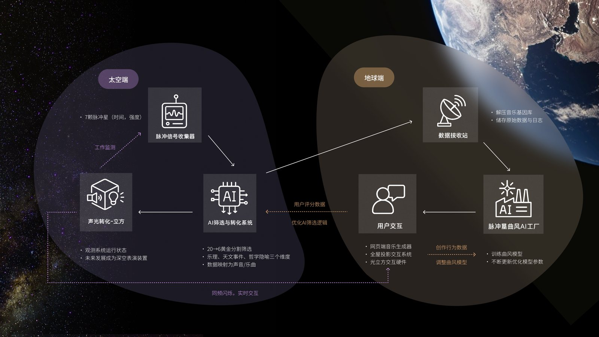
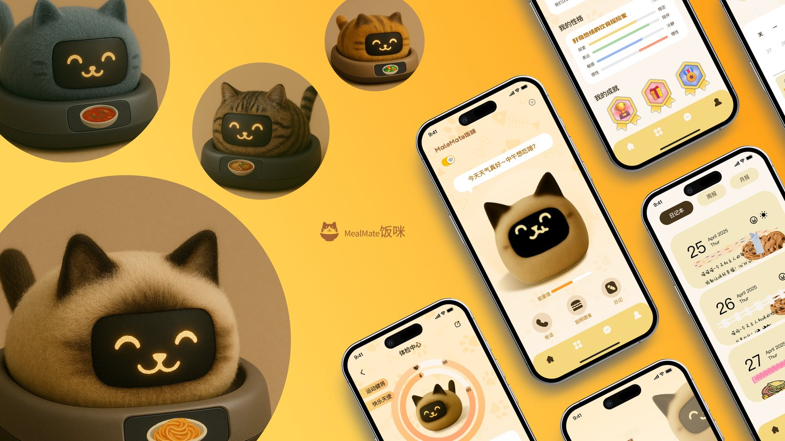

PROJECT PORTFOLIO · 2022—2026
张一文
清华大学美术学院 · 信息艺术设计系 · 艺术与科技（信息设计）
10+
完整设计/研发项目
3
已上线 App
9
科创竞赛奖项
A+×6
满绩专业课
01
核心项目
SELECTED WORKS
毕业设计 · 沉浸式人机交互叙事
Evans — 人机共生的沉浸式交互叙事
身份 独立创作者（概念 / 交互设计 / 前端研发） · 时间 2025.09 — 2026.06 · 导师 付志勇
以「共生」为核心命题的沉浸式交互装置。作品用一段「序曲—故障—自由」的三幕叙事，让观众从被 AI 引导，走向与数据流的自由共处——探讨人与智能体之间从依赖到平等的关系边界。
- 三幕叙事结构：全黑序曲中呼吸光点与极速打字机（4ms/字符）引入 → ERROR 故障叙事数据洪流涌出 → Evans 劝阻后消失、把交互权彻底交还观众。
- 实时图形系统：基于 WebGL / Canvas 自研全屏粒子系统，数万级粒子实时渲染稳定 60fps；粒子球采用两极密集、赤道稀疏的自然分布与沙丘层渐变。
- 交互叙事引擎：状态机驱动的幕次切换、字符流打字机、故障态渲染与观众自由态交互，全部纯前端实现、零后端依赖。
- 完整交付：可交互 Web 原型 + 18 页 HTML 答辩演示系统（自建幻灯片导航框架），已部署 GitHub Pages 公网可访问。
60fps
全屏粒子实时渲染
3 幕
序曲/故障/自由交互
18 页
自建答辩演示系统
0 后端
纯前端可离线运行
WebGLCanvas 2D粒子系统GLSL交互叙事GitHub Pages
独立产品 · AI 人机共创
苏格拉底请回答 — 与思想者对话的 AI 共创平台
身份 独立设计与全栈研发 · 时间 2025.09 — 至今 · 形态 Web 全栈原型
针对「看 TED — 收藏 — 转发 — 遗忘」的知识消费断层（72% 用户观看后仅收藏、15% 真正内化输出），构建一个让用户与古今 255 位思想者对话、并沉淀为自己观点的 AI 共创平台。核心是把被动的 TED Talk 转化为用户自己的 My Talk。
- 三大模块：名人智囊（255 位思想者 · 覆盖约 18 个领域）、群贤论道（多智者圆桌 + AI 主持人调度）、思想人物卡（可沉淀与私密收藏的观点资产）。
- 智能荐师引擎：用户提问经意图五分类（成长/职业/关系/创造/学习）加权映射到领域，精准推荐最契合的思想者组合。
- 人格化 RAG：三路加权检索（重要度 0.5 + 词法 0.35 + 来源置信 0.15）+ 6 条反幻觉全局护栏，在角色人格与事实边界间取得平衡。
- 伦理设计：AI 定位为「支架」而非「代笔」，正文由用户自主撰写；全局标注「非真实人物实时发言」，以思想为证据、人物为视角、学生观点为最终资产。
- 四段旅程闭环：听见思想 → 内化（与角色辩论）→ 人格共创 → 表达思想，形成从输入到产出的完整学习闭环。
255
思想者人物库
~18
覆盖领域
5 类
意图识别分类
4 层
全栈技术架构
FastAPISQLiteDeepSeek LLM人格化 RAG意图分类多智能体调度
02
交互设计作品
INTERACTION DESIGN
多模态 AI · 声光共创系统
宇宙回声 ECHO VERSE — 脉冲星声纹转化与共创系统
身份 主创 / 系统设计 / AI 工程原型 · 类型 跨维度人机交互系统（软硬件结合）
把万亿光年外脉冲星的信号，转化为可听见的音乐与可触摸的光影。项目以「Turn light-year pulses into your cosmic earbeats」为主张，融合太空数据采集、AI 曲风模型、Web 创作平台与实体声光交互硬件，构建人类与宇宙之间的情感共振平台。
- AI 筛选与转化系统：对 7 颗脉冲星原始信号做「20→6 黄金分割筛选」，从乐理、天文事件、哲学隐喻三个维度将时间-强度数据映射为声音与乐曲。
- 完整数据闭环：太空端信号采集 → 地球端数据接收站解压音乐基因库 → 脉冲晨曲风 AI 工厂训练曲风模型 → 用户评分与创作行为反哺，持续优化筛选逻辑与模型参数。
- 三端交互：网页端生成式对话音乐生成器 + 全屋投影交互系统 + 光立方交互硬件；按住麦克风即可用声音实时影响粒子运动，与脉冲星「同频闪烁」。
- 工程原型：用 Python 对接 DeepSeek API 完成信号分析与 prompt→音乐/封面的生成链路，落地可运行的技术验证 Demo。
7 颗
脉冲星信号源
20→6
黄金分割 AI 筛选
3 维
乐理/天文/哲学映射
软+硬
Web+声光立方体


左：脉冲星音画交互界面（首页 + 音画交互页） · 右：太空端—地球端完整数据闭环架构
多模态生成AI 音乐系统DeepSeek数据可视化软硬件结合粒子交互
AI 陪伴 · 软硬件产品
MEALMATE 饭咪 — 缓解独居青年饮食孤独的 AI 饭搭子
身份 产品设计 / 交互设计 · 类型 软硬件结合的 AI 陪伴产品
聚焦独居青年的饮食与情感困境，以用餐场景为切入点，打造一款融合陪伴、互动与健康管理的 AI「饭搭子」——一只有性格、会成长、能陪你吃饭聊天的智能宠物。
- 性格养成系统：36 种表情 · 16 种性格，通过饮食互动培养出独一无二的宠物人格（从「好奇热情的饮食探险家」到理性稳定型）。
- 健康闭环：食材购买建议、菜谱教学、体检中心（运动/情绪双维度评分）、健康日记 / 周报 / 月报，把饮食健康管理变成有陪伴感的日常。
- 情感与社交：陪吃陪聊共享菜单、跨地域「搭子电话」实时连线、按「对胃口」匹配好友编号，用情绪价值缓解独居孤独。
- 软硬件一体：猫咪造型实体喂食硬件 + 配套 App，能量值、拍照喂食、日记本联动，形成完整养成体验。
36 / 16
表情 / 性格
4 大
核心功能模块
软+硬
硬件 + App 一体


左：饭咪硬件 + 性格/体检/日记 App 界面 · 右：食材购买/菜谱/陪吃陪聊/养成等核心功能
智能硬件情绪价值性格养成健康管理社交匹配
交互网页 · 文化叙事
千年调 — 中国古代猫咪画卷
身份 交互设计 / 视觉设计 / 前端 · 类型 沉浸式交互网页 / H5
一部以「猫」为视角的中国古代文化交互画卷。用户化身一只小猫，穿行于唐、宋、明、清的历史场景，沉浸式了解古代猫咪与人、与政治、与社会的关系发展史——兼具趣味性、交互性、游戏性与考究性。
- 叙事化信息设计：以朝代为章节、以猫视角为主线，把散落的历史考据编织成可漫游的叙事长卷（书坊、猫儿房、市场、器物画作等场景）。
- 考究的内容：取材真实文物与史料，如《唐苑蝶春图》、乾隆款画珐琅猫蝶图鼻烟壶等，在趣味中保证历史严谨性。
- 横向卷轴交互：拖拽翻页的长卷式浏览，配合古画卷视觉语言，营造沉浸式文化体验。


左：古画卷风格封面 · 右：唐宋明清多朝代历史场景与文物画作
交互网页文化叙事视觉设计信息设计H5
03
产品落地
SHIPPED & DEPLOYED
已上线 App
三款已上线应用
身份 设计与产品 · 成果 华为 App 匠心奖（第 77 期）
- 句读 — 发现文字之美：为文字保留一个疗愈角落，精致图文卡片 + 每日推荐，让阅读回归仪式感。获华为匠心奖第 77 期推荐。
- 博物门 — 看见世界文明：以名画与文物为入口的世界文明科普 App（如《戴珍珠耳环的少女》主题卡片）。
- goodquotes — Words That Move You：面向英文经典段落的摘录与灵感激发应用（Jane Eyre、Yellowface 等）。


左：句读 / 博物门 / goodquotes 三款已上线应用 · 右：微信读书书封生成、秒剪动态花字、理想汽车 lora 训练等落地 AI 工作流
iOS App图文卡片产品设计
落地 AI 工作流
产业级 AI 生成工作流
身份 AI 工作流设计与实现 · 场景 真实业务落地
- 微信读书 — AI 自动化书封生成：构建从书名/简介到成品书封的自动化生成链路，规模化产出风格统一的封面。
- 秒剪 — AI 可编辑动态花字生成：面向短视频剪辑的动态花字自动生成与二次可编辑方案。
- 理想汽车 — L6 / L9 车型 lora 模型训练：针对具体车型完成 lora 训练与一致性生成，保证多场景出图的品牌一致性。
- 微信输入法 — AI 卡片生成：基于 Dify workflow，输入文本即生成多种风格排版模板（商务/创意/极简/科技/教育/自然等），实测可精准匹配不同文字内容的美观排版。
Dify WorkflowLoRA 训练一致性生成Prompt 工程AIGC 落地
04
荣誉与学业
AWARDS & ACADEMICS
科创竞赛 · 9 项奖项
创新与竞赛能力
- 国家级：睿抗机器人大赛全国一等奖、华为 App 匠心奖、中美青年创客大赛二等奖、国际大学生创新创业大赛十佳优胜奖。
- 校级 / 市级：睿抗机器人大赛北京市一等奖、清华设计+创新创业大赛二等奖、清华挑战杯三等奖、艺术与科技创新创业大赛最佳团队奖、SDG 创新创业马拉松二等奖。
- 代表作：「基于草图的雕塑图像检索系统」入选清华第 41 届挑战杯学生课外科技作品展（指导老师 徐迎庆）。


左：科创竞赛奖项与获奖作品 · 右：学业成绩与奖学金证书
学业 · Academic
学业表现
- 总成绩 3.98 / 4.0，专业总排名第 1，自入学以来始终保持专业第一，6 门专业课拿到 A+。
- 奖学金：2023—2024 国家奖学金、国家励志奖学金、清华大学综合优秀奖学金（连续两年）、清华之友-康颂奖学金。
3.98
GPA / 4.0
No.1
专业排名
A+×6
满绩专业课
5 项
奖学金
张一文 · 清华大学美术学院 信息艺术设计系 · 艺术与科技（信息设计）· 2022—2026